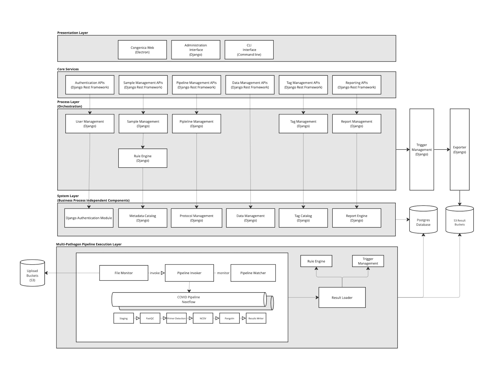
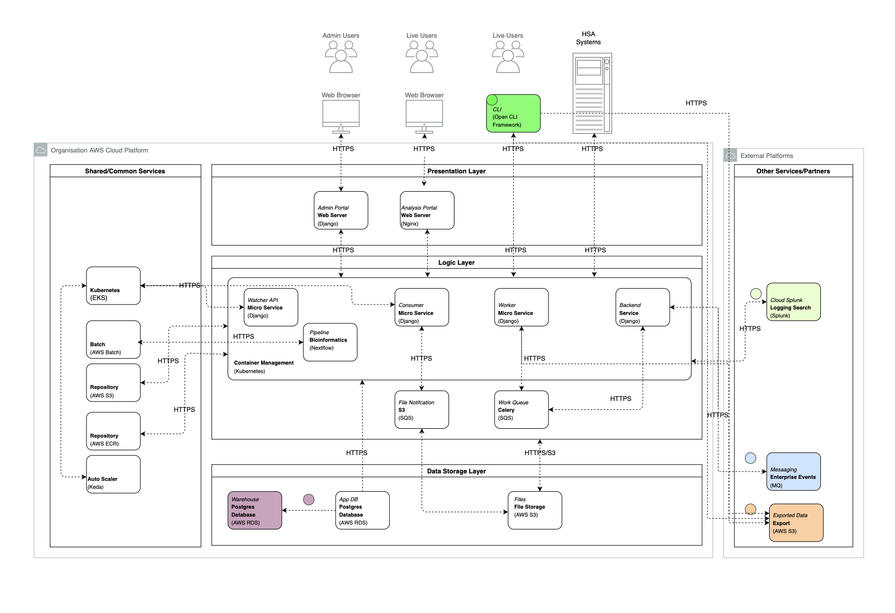
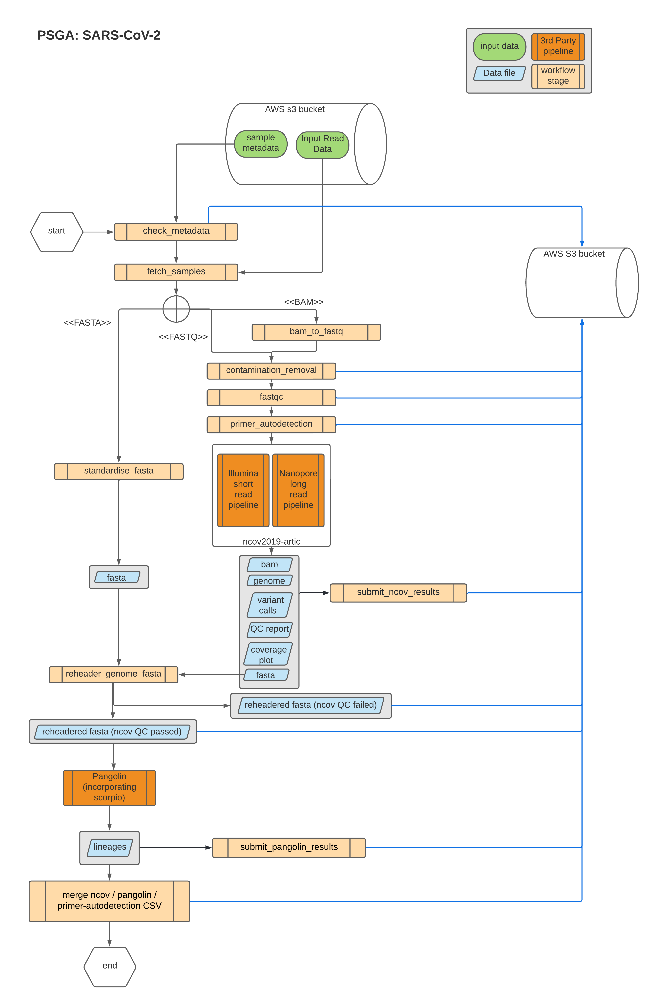
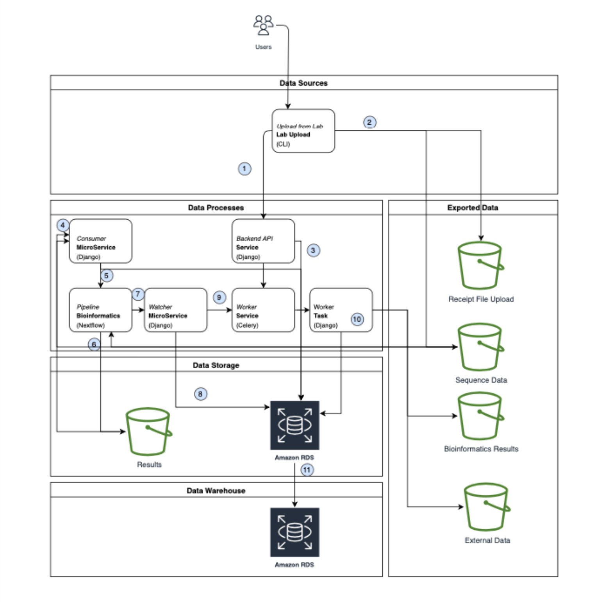

👋 Hi, this is Ajay, Head of Engineering, and I'm thrilled to share an insightful article with you on the intricate world of genomic sequencing and analysis. In this deep dive, we'll explore the technical approach of establishing a robust, secure, and rapid sequencing and analysis platform, a venture I spearheaded as part of a bid for the UK Health Security Agency (UKHSA).
Unlocking the Genomic Mysteries: Designing a High-Throughput Sequencing Marvel
In the dynamic realm of genomic research, the imperative for large-scale, rapid genomic sequencing has become ever more critical, especially in response to the emergent challenges posed by SARS-CoV-2. As the Head of Engineering for Congenica, a key contender in the bid for the UK Health Security Agency (UKHSA) contract, my role proved pivotal in spearheading an initiative aimed at addressing this pressing public health need. Collaborating closely with the Architect, my responsibilities encompassed the meticulous preparation of the design, ensuring adherence to all requirements, and acting as the crucial technology liaison with HSA.
The advent of SARS-CoV-2 has underscored the urgency for substantial advancements in genomic sequencing and analysis. Recognizing this imperative, Congenica, in its bid for the UKHSA contract, has embarked on a mission to establish robust genomic sequencing capabilities, seeking crucial insights into the virus's spread and evolution. This undertaking revolves around the implementation of a high-throughput sequencing and analysis platform, specifically designed to process SARS-CoV-2 samples sourced from various laboratories across the UK. Our primary objective is to furnish actionable genomic insights in near real-time, empowering informed decision-making in the ongoing pandemic.
For more details, refer to the project notice
Key Objectives:
- Tracking Viral Mutations and Evolutionary Lineages: Develop mechanisms to actively monitor and trace mutations in the virus while assigning accurate evolutionary lineages.
- Analytical Output Generation: Create a sophisticated framework for generating analytical outputs, providing a comprehensive characterization of genomic traits for in-depth analysis.
- Standardizing Data Formats: Ensure data consistency by implementing standardized formats across diverse laboratories, fostering seamless collaboration.
- Elastic Scalability: Design the platform to exhibit elastic scalability, adeptly accommodating fluctuations in sample volumes with efficiency and precision.
- Integration with UKHSA Infrastructure: Establish seamless integration with the existing UKHSA infrastructure, fostering a collaborative ecosystem to enhance overall efficiency and effectiveness.
The Technical Blueprint:
Our technical approach revolves around creating a resilient, secure, and expeditious sequencing and analysis platform. By harnessing the capabilities of high-throughput sequencing technologies, our system is designed to actively monitor viral mutations in real-time, evaluate relationships between different samples, and produce analytical outputs. The adoption of standardized data formats adds a layer of consistency, and the system's elastic scalability ensures seamless adaptability to fluctuating sample volumes. Furthermore, our integration with the UK Health Security Agency (UKHSA) infrastructure is geared towards fostering collaboration and facilitating the sharing of crucial data.
Operational Capabilities:
The operational capabilities of the platform will enable comprehensive genomic surveillance. By delivering timely and actionable insights, the system aims to inform public health strategies in addressing the challenges posed by SARS-CoV-2. The project emphasizes a proactive approach to public health decision-making, leveraging advanced genomic sequencing and analysis.
In this article, we delve into a structured four-step process that forms the backbone of our exploration into each system design challenge:
- Understanding the Problem and Defining Design Scope
- Proposing High-Level Design and Securing Buy-In
- Deep-Dive into Design
- Effective Wrap-Up
Embark on this journey with me as we delve into the intricacies of genomic sequencing, striving to unlock the mysteries that lie within the genetic fabric of SARS-CoV-2. Your 20-minute read promises to be a captivating exploration into the future of genomic research. Let's dive in!
Understanding the Problem and Defining Design Scope: Navigating Technical Challenges
In this critical phase, our focus was on comprehending and defining the scope of the challenges posed by the technical landscape. Addressing these challenges was imperative to lay a solid foundation for the subsequent stages of our project.
1. Scalable Architecture for Diverse Genetic Data:
- Challenge: The intricate nature of genetic data, especially in the context of SARS-CoV-2 samples, presented a formidable obstacle. Designing a scalable architecture capable of accommodating various genetic variations and future genomic complexities was pivotal.
2. Optimizing Performance for Large Datasets:
- Challenge: Realizing the project's key objective of processing large datasets in near real-time brought forth challenges in performance optimization. The system needed to efficiently handle vast amounts of sequencing data, ensuring outputs were generated within stringent timeframes.
- Performance Benchmark: "During normal use, defined as processing up to 100,000 samples spread approximately evenly over each week, the system should return outputs on a sample within 4 hours of loading the sequence."
3. Integration of an Event-Driven System:
- Challenge: The introduction of an event-driven system added a layer of complexity, especially concerning scalability and performance. Coordinating real-time events across a distributed environment necessitated a robust architecture to maintain responsiveness and reliability.
4. Ensuring Data Consistency and Standardization:
- Challenge: Standardizing data formats across laboratories for consistency brought about challenges related to data integrity and uniformity. Ensuring diverse datasets adhered to standardized formats was crucial for meaningful comparative analysis.
Addressing these technical challenges demanded a collaborative, interdisciplinary approach, involving experts in genomics, data engineering, and system architecture. The solutions devised in this phase were integral to the successful implementation of our high-throughput sequencing and analysis platform.
Additionally, it's important to note that there were other requirements beyond those explicitly emphasized in this overview.
Propose High-Level Design and Get Buy-In:

Multi-Layered Architecture:
- Presentation Layer: At the forefront, a user-friendly single-page application served as the presentation layer, offering a seamless interface for end-user display and interaction. Authentication services, sample management, and report generation seamlessly operated within this layer.
- Core Services: Positioned beneath the presentation layer, the core services layer provided a RESTful API accessible to external consumers. This layer encapsulated vital functionalities like user authentication, data ingest, and report generation within independent domain services, facilitating modular development and deployment.
- Process Layer: Orchestrating internal business processes, including sample registration and validation, the process layer ensured the execution of critical tasks while maintaining flexibility for future modifications.
- System Layer: Dedicated to internal system services, especially handling data repository services, the system layer played a crucial role in managing and storing genetic data efficiently.
Multi Pathogen Pipeline Execution Layer:
- Innovative Layer: A groundbreaking addition, the Multi Pathogen Pipeline Execution Layer facilitated the concurrent execution of multiple analysis pipelines. This layer streamlined staging, quality control, and results gathering for various pathogens.
- Scalability: Engineered for scalability, the layer's design allowed easy extension and independent deployment. Notably, the separation of the Multi Pathogen Pipeline domain enabled streamlined extension and deployment of specific pathogen pipelines.
Service-Based and Event-Driven Architectural Patterns:
- Service-Based Architecture: Embracing a service-based architectural pattern, the system decomposed functionalities into domain services for independent deployment. This not only ensured clear demarcation of service boundaries but also facilitated scalability and fault tolerance through multiple service instances.
- Event-Driven Architecture: Leveraging an event-driven architecture played a crucial role in achieving scalability and performance. Independent events, such as analysis run completion and sample tag updates, were decoupled from processing components, allowing asynchronous execution and supporting high-performance tasks like sample processing and data exporting.
Efficient Bulk Data Transfer using S3 API:
- API-First Approach: The adoption of an API-First approach underscored that all interactions with the system occurred through REST-based APIs. The S3 API played a pivotal role in efficient bulk data transfer, aligning with the system's imperative to handle large volumes of genetic data.
Deep Dive into Design
Explore the intricate details of the system's architecture through a breakdown of its core components. Each layer plays a crucial role in the seamless operation and management of genetic data, ensuring scalability, reliability, and optimal performance throughout the platform.
Component Details
The component details section provides a comprehensive overview of the key modules and their responsibilities within the bioinformatics system. From the Presentation Layer to the Data Layer, each component is meticulously described, highlighting its specific role and interactions with other elements. This detailed breakdown aids in understanding the system's architecture and the seamless coordination of various functionalities.Presentation Layer:
- Single Page Application: A seamless single-page application for user interaction.
- Auth Component: Provides authentication services, enabling user login and token issuance.
- Samples Component: Allows viewing, editing, and tagging of samples via the Sample Manager API.
- Reports Component: Facilitates requesting, displaying, and downloading reports via the Reports Manager.
- Tags Component: Manages user-created tags through the Tag Manager.
API Layer:
- REST API: Provides a REST API for the single-page application and CLI upload tool.
- User Manager: Handles user authentication, providing API access tokens.
- Data Ingest: Manages "Uploads," representing batches of samples. Utilizes the Sample Manager for sample registration and completeness checks.
- Sample Manager: Registers, views, and edits samples and results. Validates metadata and notifies the Trigger Manager of key events.
- Reports Manager: Offers an API for report data and formatted reports. Utilizes the Reports Engine for data summarization.
- Data Manager: Facilitates access to S3 storage. Provides pre-signed URLs for file uploads and downloads.
- Tag Manager: Enables tag creation, addition, and removal from samples. Allows sharing rules between organizations.
Business Layer:
- Pipeline Loader: Admin function to load pipelines into the system.
- Protocol Manager: Manages interactions of analysis pipelines, pathogens, and kits.
- Tag Catalogue: Manages tags, accessibility, and sharing rules.
- Metadata Catalogue: Manages metadata defining fields and rules for samples.
- Rules Engine: Applies rules to data, generating errors or tags for samples.
- Reports Engine: Summarizes data for reports.
Data Layer:
- Exports System: Scales out to run export jobs. Guards exports based on sample tags.
- File Monitor: Watches the S3 bucket, registering uploaded files. Notifies the Pipeline Invoker on upload completion.
- Pipeline Invoker: Starts pipeline runs triggered by the File Monitor or Sample Manager. Writes source data to the pipeline.
- Pipeline Watcher: Observes running pipelines and notifies the Results Loader on completion.
- Results Loader: Validates results using the Rules Engine. Loads results into the database with applied tags.
- Trigger Manager: Notified of system events and starts appropriate exports.
Multi-Pathogen Pipeline Execution Layer:
The multi-pathogen pipelines framework facilitates the configuration and execution of multiple pipelines concurrently. Each pipeline is defined by a YAML description file, outlining inputs, outputs, associated pathogens, supported protocols, and the combination of sequencing technology and kit. Additionally, a Docker image housing a NextFlow pipeline is required for the execution of each configured pipeline. This modular and flexible framework allows for efficient management of diverse pathogen analysis processes within the bioinformatics system.
SARS-CoV-2 Analysis Pipeline:
- Staging Nextflow Process: Stages the sequence data for processing.
- FASTQC Nextflow Process: Conducts fundamental QC analysis on the sequence data.
- Primer Detection Process: Performs primer detection, ensuring proper handling of reported and measured primers.
- NCov and Pangolin Stages: Utilizes nextstrain and pangolin tools for lineage analysis of the samples.
- Results Writer:Gathers the analysis results and stores the results in the S3 results bucket.
Staphylococcus aureus Analysis Pipeline:
- Staging Nextflow Process: Stages the sequence data for processing.
- FASTQC Nextflow Process: Performs fundamental QC analysis on the sequence data
- Bactopia Nextflow Process: Conducts a comprehensive analysis of the Staphylococcus aureus pathogen.
- Results Writer: Gathers the analysis results and stores the results in the S3 results bucket.
Common Services:
- Database Auditlog: A component deployed in Django that ensures all database modifications are recorded in the database.
- Audit Log: Provides facilities for applications to generate logging or audit events and forwards them to an external system for recording and alerting as appropriate.
Integration Architecture
The integration architecture of the system ensures seamless collaboration and communication between various components. It establishes robust connections and data flow mechanisms, allowing efficient interaction between the Presentation Layer, API Layer, Business Layer, and Data Layer. This architecture plays a pivotal role in achieving cohesive functionality and maintaining the integrity of the entire bioinformatics system.

SARS-CoV-2 Pipeline Design
This section provides insights into the bioinformatics design of the SARS-CoV-2 pipeline. The workflow follows the ARTIC protocol, as outlined by the ARTIC network consortium [ARTIC Network](https://artic.network/ncov-2019).
The system incorporates various bioinformatics components, each contributing to specific functionalities. Below are key components along with their corresponding design documents:
- contamination_removal: Remove any reads that are not related to SARS-CoV-2. Design document: Contaminated Reads Removal.
- fastqc: Perform basic Quality Control (QC) checks. Design document: FASTQC.
- primer_autodetection: Autodetect the primer scheme. Design documents: Primer Autodetection, Primer Selection.
- ncov2019-artic-nf: Produce viral genome assemblies from sequence data. Design document: nCoV2019-artic-nf (3rd-party pipeline).
- pangolin / scorpio: Assign epidemiological lineages. Design document: Pangolin/Scorpio (3rd-party pipeline).

Data Flow
The data flow section illustrates the journey of information within the bioinformatics system. It delves into how data is ingested, processed, and transformed across different layers, emphasizing the interconnected nature of the components. Understanding the data flow is crucial for comprehending the system's dynamics and the efficient handling of genetic information from input to output.

-
The Command Line Interface (CLI) assigns a unique sample ID and registers samples in the backend service using the sample data file. Only metadata specified in the metadata catalog is uploaded, while other data remains in the receipt file sent to the UK Health Security Agency (UKHSA).
-
The CLI uploads sequence data to the designated sequence data bucket. Once confirmed, the receipt file containing source metadata and the assigned Congenica sample ID is uploaded to the UKHSA S3 bucket.
-
The backend service validates the sample data using the rules engine component. It either returns errors to the CLI for logging and display or records the uploads and samples in the database. The collaboration of data ingest, sample manager, rules engine, protocol manager, metadata catalog, and tag catalog not only validates the data but also automatically adds appropriate tags to the samples.
-
The consumer process receives notifications from the S3 sequence data bucket and registers files in the database.
-
The consumer identifies when a batch has had all files uploaded and initiates the required pipeline through the pipeline invoker component.
-
The pipeline runs, scaling out over an AWS Batch queue as needed, and writes results to the results bucket. Results include a results.csv file with per-sample results and a resultsfiles.json file identifying bulk data associated with the samples.
-
The watcher process is notified of pipeline completion as it monitors jobs via the Kubernetes API.
-
Upon job completion, the watcher records the job status and timings in the database.
-
The result loader is then invoked, distributing the loading work through a Celery queue. As results are loaded, the trigger manager is notified of specific steps completing, triggering configured export jobs via the Celery queue.
-
A series of worker tasks run, loading results into the database and exporting data to external systems based on configured exports.
Wrap Up: Overcoming Genetic Sequencing Challenges
1. Scalable Architecture for Diverse Genetic Data:
Challenge: The complexity of genetic data, especially within the context of SARS-CoV-2 samples, posed a significant hurdle. Designing a scalable architecture capable of accommodating various genetic variations and anticipating future genomic complexities was pivotal.
Solution: We devised a multi-layered architecture that seamlessly handles diverse genetic variations. The design ensures scalability and adaptability to evolving genomic landscapes, allowing the platform to efficiently process a wide range of genetic data.
2. Optimizing Performance for Large Datasets:
Challenge: Realizing the project's objective of processing large datasets in near real-time presented challenges in performance optimization. The system needed to efficiently handle vast amounts of sequencing data while meeting stringent timeframes.
Solution: Implementing an innovative approach, we optimized performance to meet the defined benchmark. The system ensures that, during normal use, outputs on a sample are generated within 4 hours of loading the sequence, maintaining efficiency and timely delivery.
3. Integration of an Event-Driven System:
Challenge: Introducing an event-driven system added complexity, particularly concerning scalability and performance. Coordinating real-time events across a distributed environment required a robust architecture to ensure responsiveness and reliability.
Solution: Our architecture successfully integrates an event-driven system, providing the flexibility needed for real-time coordination. This ensures the platform's reliability, scalability, and responsiveness in handling events across the distributed environment.
4. Ensuring Data Consistency and Standardization:
Challenge: Standardizing data formats across laboratories for consistency introduced challenges related to data integrity and uniformity. Ensuring diverse datasets adhered to standardized formats was crucial for meaningful comparative analysis.
Solution: We implemented rigorous standards and protocols to ensure data consistency. The collaborative effort of data ingest, sample manager, rules engine, protocol manager, metadata catalog, and tag catalog not only validates data but also adds appropriate tags, ensuring uniformity and integrity across diverse datasets.